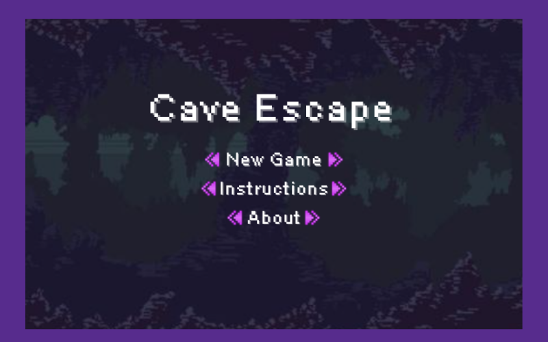
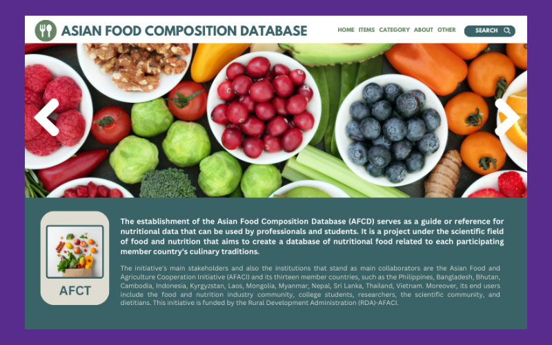
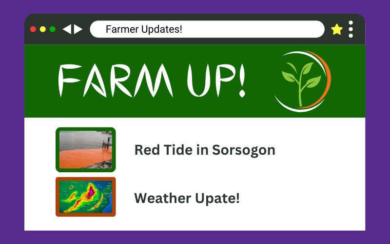

Cave Escape is a shooting game developed as a final project in CMSC 22
using object-oriented programming concepts taught in the course.
Asian Food Composition Database is a website developed to systematically
present the nutritional content of each asian country's local food.
ControlC is a browser extension that uses AI to scan the text of any presentation, video,
chart, or picture and convert it in a text format either summarized, in flip cards, or quizlet.
Farm UP! or Farm Updates is a nationwide news site where farmers and consumers
can contribute and consume valuable information about agriculture related topics.
Skilled in analyzing complex technical information
Good research skills
Experienced in building software applications
Educated in JavaScript, Linux/Unix, Perl, Shell, Java, Python
Knowledgeable in computer architecture, operating systems, and data structures
I am Daphne Jane Encinares, graduated with a double major in BS Development Communication and BS Computer Science.
I am 21 years old, born on October 26, 2001. I was born and raised in Irosin, Sorsogon located at the southern part of Bicol.
I was born and raised in Irosin, Sorsogon located at the southern part of Bicol.
I went to Irosin Central School for elementary and Gallanosa National High School for high school.
I completed my degree in college at the University of the Philippines Los Banos.